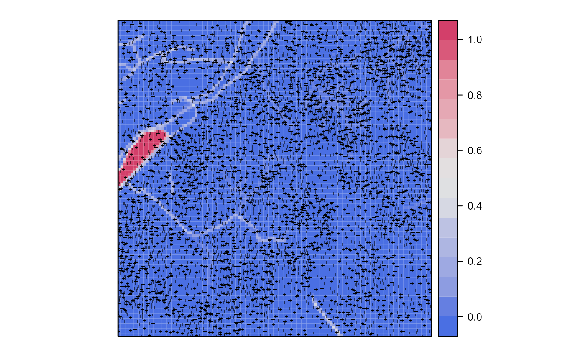

baranja.RdBaranja hill is a 4 by 4 km large study area in the Baranja region, eastern Croatia (corresponds to a size of an aerial photograph). This data set has been extensively used to describe various DEM modelling and analysis steps (see Hengl and Reuter, 2008; Hengl et al., 2010; doi:10.5194/hess-14-1153-2010
). Object barxyz contains 6370 precise observations of elevations (from field survey and digitized from the stereo images); bargrid contains observed probabilities of streams (digitized from the 1:5000 topo map); barstr contains 100 simulated stream networks ("SpatialLines") using barxyz point data as input (see examples below).
data(bargrid)The bargrid data frame (regular grid at 30 m intervals) contains the following columns:
p.obsobserved probability of stream (0-1)
xa numeric vector; x-coordinate (m) in the MGI / Balkans zone 6
ya numeric vector; y-coordinate (m) in the MGI / Balkans zone 6
Hengl, T., Reuter, H.I. (eds), (2008) Geomorphometry: Concepts, Software, Applications. Developments in Soil Science, vol. 33, Elsevier, 772 p.
Hengl, T., Heuvelink, G. B. M., van Loon, E. E., (2010) On the uncertainty of stream networks derived from elevation data: the error propagation approach. Hydrology and Earth System Sciences, 14:1153-1165. doi:10.5194/hess-14-1153-2010
Consider using the 30 m resolution grid (see bargrid) as the target resolution (output maps).
library(sp)
library(gstat)
## sampled elevations:
data(barxyz)
prj = "+proj=tmerc +lat_0=0 +lon_0=18 +k=0.9999 +x_0=6500000 +y_0=0 +ellps=bessel +units=m
+towgs84=550.499,164.116,475.142,5.80967,2.07902,-11.62386,0.99999445824"
coordinates(barxyz) <- ~x+y
proj4string(barxyz) <- CRS(prj)
#> Warning: Discarded datum Unknown based on Bessel 1841 ellipsoid in Proj4 definition
## grids:
data(bargrid)
data(barstr)
coordinates(bargrid) <- ~x+y
gridded(bargrid) <- TRUE
proj4string(bargrid) <- barxyz@proj4string
bargrid@grid
#> x y
#> cellcentre.offset 6551895 5070570
#> cellsize 30 30
#> cells.dim 123 124
if (FALSE) ## Example with simulated streams:
data(R_pal)
library(rgdal)
#> Please note that rgdal will be retired by the end of 2023,
#> plan transition to sf/stars/terra functions using GDAL and PROJ
#> at your earliest convenience.
#>
#> rgdal: version: 1.5-32, (SVN revision 1176)
#> Geospatial Data Abstraction Library extensions to R successfully loaded
#> Loaded GDAL runtime: GDAL 3.3.2, released 2021/09/01
#> Path to GDAL shared files: C:/Users/shs/AppData/Local/R/win-library/4.2/rgdal/gdal
#> GDAL binary built with GEOS: TRUE
#> Loaded PROJ runtime: Rel. 7.2.1, January 1st, 2021, [PJ_VERSION: 721]
#> Path to PROJ shared files: C:/Users/shs/AppData/Local/R/win-library/4.2/rgdal/proj
#> PROJ CDN enabled: FALSE
#> Linking to sp version:1.4-7
#> To mute warnings of possible GDAL/OSR exportToProj4() degradation,
#> use options("rgdal_show_exportToProj4_warnings"="none") before loading sp or rgdal.
library(RSAGA)
#> Error in library(RSAGA): there is no package called 'RSAGA'
pnt = list("sp.points", barxyz, col="black", pch="+")
spplot(bargrid[1], sp.layout=pnt,
col.regions = R_pal[["blue_grey_red"]])

## Deriving stream networks using geostatistical simulations:
Z.ovgm <- vgm(psill=1831, model="Mat", range=1051, nugget=0, kappa=1.2)
sel <- runif(length(barxyz$Z))<.2
N.sim <- 5
## geostatistical simulations:
DEM.sim <- krige(Z~1, barxyz[sel,], bargrid, model=Z.ovgm, nmax=20,
nsim=N.sim, debug.level=-1)
#> drawing 5 GLS realisations of beta...
#> [using conditional Gaussian simulation]
#>
9% done
38% done
69% done
100% done
## Note: this operation can be time consuming
stream.list <- list(rep(NA, N.sim))
## derive stream networks in SAGA GIS:
for (i in 1:N.sim) {
writeGDAL(DEM.sim[i], paste("DEM", i, ".sdat", sep=""),
drivername = "SAGA", mvFlag = -99999)
## filter the spurious sinks:
rsaga.fill.sinks(in.dem=paste("DEM", i, ".sgrd", sep=""),
out.dem="DEMflt.sgrd", check.module.exists = FALSE)
## extract the channel network SAGA GIS:
rsaga.geoprocessor(lib="ta_channels", module=0,
param=list(ELEVATION="DEMflt.sgrd",
CHNLNTWRK=paste("channels", i, ".sgrd", sep=""),
CHNLROUTE="channel_route.sgrd",
SHAPES="channels.shp",
INIT_GRID="DEMflt.sgrd",
DIV_CELLS=3, MINLEN=40),
check.module.exists = FALSE,
show.output.on.console=FALSE)
stream.list[[i]] <- readOGR("channels.shp", "channels",
verbose=FALSE)
proj4string(stream.list[[i]]) <- barxyz@proj4string
}
#> Error in rsaga.fill.sinks(in.dem = paste("DEM", i, ".sgrd", sep = ""), out.dem = "DEMflt.sgrd", check.module.exists = FALSE): could not find function "rsaga.fill.sinks"
# plot all derived streams at top of each other:
streams.plot <- as.list(rep(NA, N.sim))
for(i in 1:N.sim){
streams.plot[[i]] <- list("sp.lines", stream.list[[i]])
}
#> Error in stream.list[[i]]: subscript out of bounds
spplot(DEM.sim[1], col.regions=grey(seq(0.4,1,0.025)), scales=list(draw=T),
sp.layout=streams.plot)